The three day ride from Halifax to North Sydney, which is where the Newfoundland ferries dock, began very nicely. I took a bicycle trail out of town and then stuck mostly to secondary roads as I passed through Truro for the second time (the first was in my rental car) and continued on to New Glasgow for the night. The weather was perfect that day—clear skies with a slight breeze. The roads were good, too—not a lot of shoulder but not a lot of traffic either.
The second day was a bit more ominous. The sky was full of dark clouds and fog, but it didn't rain much. I had an unusual problem with my derailleur when I was close to Port Hastings, so a kind motorist brought me to town in his pickup truck. I took a quick look at the derailleur and got it working again before getting a motel there for the night, since there was a lot of rain on the way.
Sure enough, when I woke up early the next morning for the 143 kilometre ride to the ferry I could already hear the drops pelting the roof. It was cool enough outside to wear my full rain gear, which kept me relatively comfortable most of the way. Despite the heavy rain and varying wind I was in good spirits as I zoomed along, having joined the Trans-Canada highway for my ride across Cape Breton. I sang through all of "100 Bottles of Beer on the Wall" for the first time in my life, and examined the restaurant signs carefully as I contemplated what I would eat before getting on the ferry.
When I got to North Sydney there was a fork in the road—I could either go to the ferry directly or go into town. While I was looking at the signs and deliberating, my bike bit a large road rock at 25 km/h. The next part happened very quickly, but I think the bike and I kind of did a corkscrew and my body banged against a few things while being tossed around by Newton's laws. Some passing drivers stopped to make sure I was okay, but I was still very much in shock at that point. They instructed me to go to the hospital and I decided that made sense, so I hitched another ride in a pickup truck and set myself up in the emergency room to wait.
My last meal before getting on the ferry ended up being two granola bars and a Gatorade from the hospital vending machine, followed by a three day old sandwich and fruit salad from a can when I was onboard. I did catch the ferry though, with a few flesh wounds and some severely bruised ribs but no breaks. Sadly, however, neither I nor my dear Francine (the bike) were in any shape for the final ride to St. John's, so we took a shuttle bus from Argentia into town.
St. John's is an extremely unique city among its Canadian counterparts, and I'm having fun despite my injured body and wounded spirit. It's difficult to end the trip this way, but it could always be far worse. When I left Vancouver three months ago, I could never have imagined the adventures which I've now experienced—I know that many of the lessons from this trip will stay with me forever. I also know that, with time, memory will do what memories do—the stories might become embellished a little bit, and some may be forgotten, but none of that can change the fact that I crossed Canada by bike.
Thanks so much for reading my blog! I guess it's done for now, but please don't hesitate to add me on Facebook or e-mail me any time.
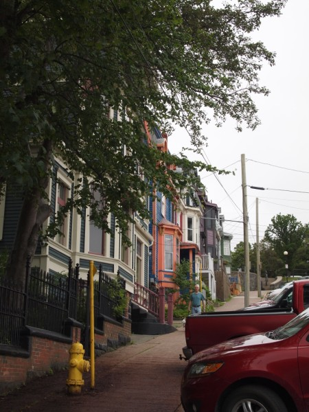
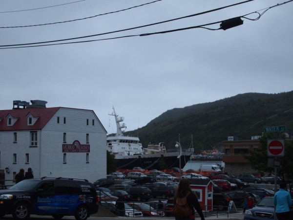
Today was awesome. Antoine and his delightful girlfriend Paula showed me around town and brought me to Peggy's Cove, which is beautiful. This evening we went to see Cirque du Soleil—a jaw-dropping performance as always. There is really nothing else to say! Tomorrow I begin the final leg of my journey.
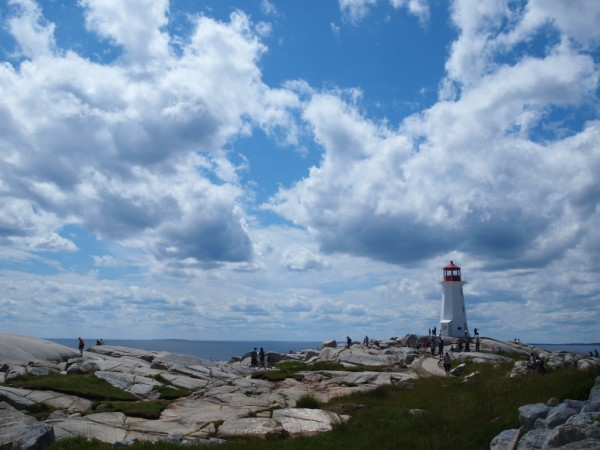
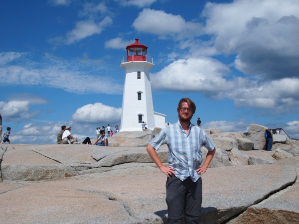
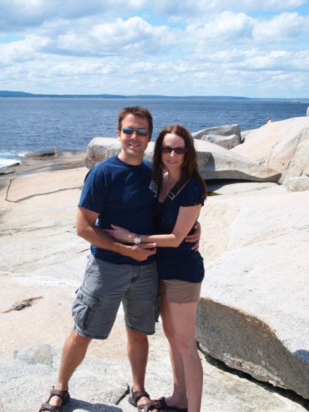
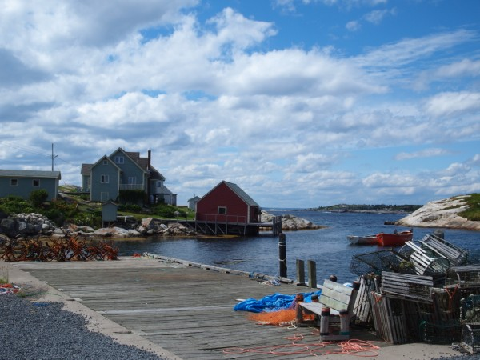
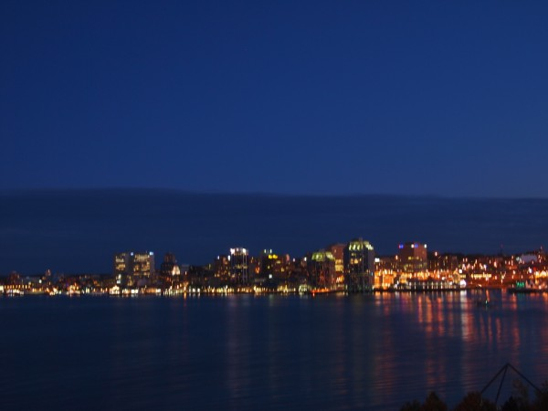
Yesterday's ride to Fredericton was hot and very humid—it felt like I was riding in a sauna. I got to town around 5 o'clock and hung out for a bit while I tried to figure out where I would stay. The entire city has public Wi-Fi access, which I thought was a fantastic idea and which I was able to leverage into a last minute CouchSurfing setup. (Thanks again, Matt!) I also checked out a local brewery with a name that is hard to remember—the point is, Fredericton is a really neat place with amazing people and tasty beer.
This morning I picked up my rental car at Fredericton International Airport and managed to pack my bike inside. I felt a twinge of guilt as I approached the beautiful ocean inside an air conditioned, motorized metal capsule but those feelings were quickly replaced with wonder, excitement, awe, etc. Driving onto the Confederation Bridge with a low dense fog gave it a mystic feeling. When Prince Edward Island finally appeared at the end (it is a long bridge) it was as if I were entering a magical world.
I spent many hours on the island, making the drive to Charlottetown but opting not to visit Green Gables when I saw the flock of (other...) tourists headed that way. I did get to see the Confederation Chamber where our country was (sort of) formed. Eventually I continued on my way to Halifax, where I met my cousin Marc-Antoine (the same that I saw in Sherbrooke but who lives here), and I'm looking forward to exploring the city with him tomorrow.
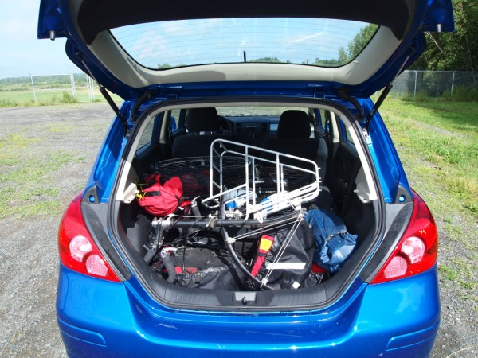
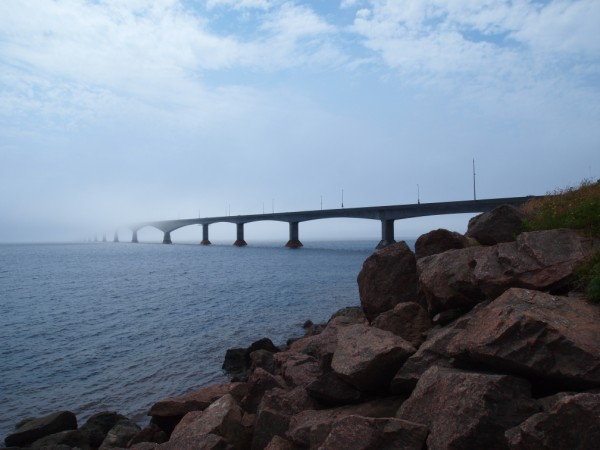
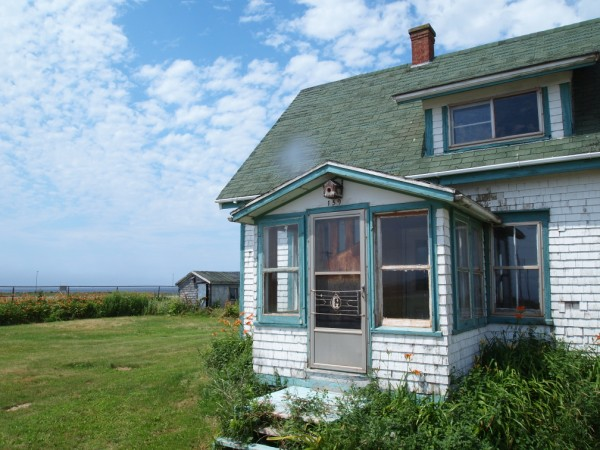
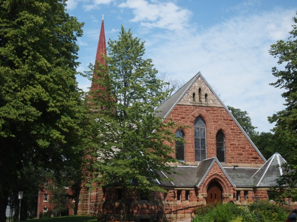
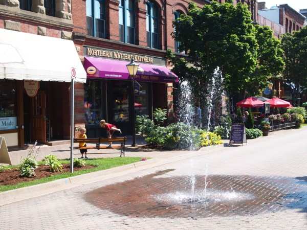
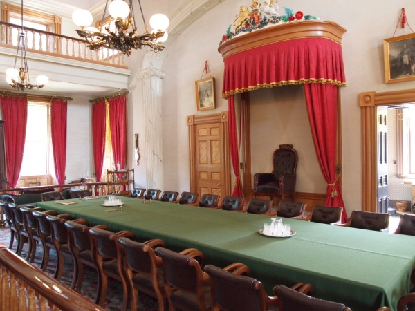
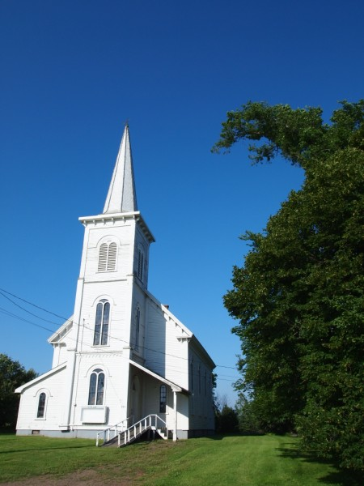
Today I decided to cheat a bit. Well, a lot. I hadn't mentioned it yet, but a few days ago I bought a plane ticket leaving St. John's on the 31st of July and made a plan for how to get there. Unfortunately I didn't leave myself a lot of room for error, and yesterday's rainstorm was a big wrench. I could still make it, but I would have to either skip Prince Edward Island and Halifax or change my flight to a later date—neither option seems very appealing, especially in light of the fact that later flights out of St. John's happen to be several hundred dollars more expensive than the flight I'm on. I didn't come all this way to skip Prince Edward Island or Halifax, either.
I've decided to rent a car for a day intead. I'll pick it up tomorrow morning in Fredericton, tour PEI, and drop it off in Halifax where I will rest for another day before making my way to the ferry landing at North Sydney.
After writing last night, I fell asleep to the sound and light show of an extremely violent thunderstorm. Several times, I awoke from my dreams to what I thought was the sound of bombs exploding—fortunately it was just a little bit of natural electric discharge. This morning I got going relatively early (especially considering the wet state of my gear) but after a few hilly hours the rain started again. I happened to be pulling into the town of Florenceville-Bristol at that point and decided to take a breather in the hopes that it might die down soon, but the rain only got stronger. I hung out with the Shogomoc Railway gift shop attendants for a while and probably lost more time than I should have before heading back into the wet, but their company was much appreciated.
Back on the road, the scenery was as beautiful as the conditions were miserable. I passed many old covered bridges and wanted to take pictures but it was raining too hard. I realized that even if I made it to Fredericton, it would be too late to dry my things in time for the next day, so I decided to get a motel room in Woodstock, NB and dry out in hopes of better weather to come.
Note: I discovered today (thanks to my dad) that my e-mail address dave@bybike.ca wasn't working properly. To those of you who tried and failed to contact me that way, I apologize! The problem has now been resolved.
It's almost 7 o'clock and I am writing from my tent, which is pitched in the middle of nowhere. I really don't know where I am, except that it is somewhere on the road between Grand-Sault and Fredericton. Route 105, to be precise. I didn't want to leave France's this morning, and after sleeping several hours later than I meant to I realized that I was maybe a bit sleep deprived. After a few hours of riding, I was sure of it. So here I am, stopped in the middle of nowhere after only 85 kilometres.
Fortunately, this part of nowhere is beautiful, and I have everything I need for the moment: granola (no milk), maple syrup (thanks to my uncle Louis), plenty of water, and an apple. I also have trail mix and some cookable food, but I'm too tired to cook. My plan is to sleep at least 10 hours and make up for lost time tomorrow.
As a side note, today I endured a cyclist rite of passage—I outpedaled a ferile dog. I don't know how it hadn't happened to me yet, but today was the day. It was, to be honest, not the day I would have chosen, but fortunately that vicious brute only had about 500 metres of sprint in him—I'm not sure I had much more than that myself.
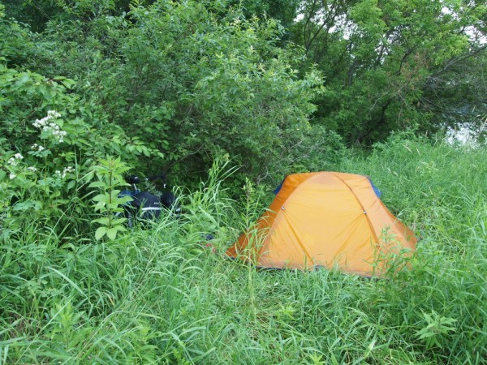
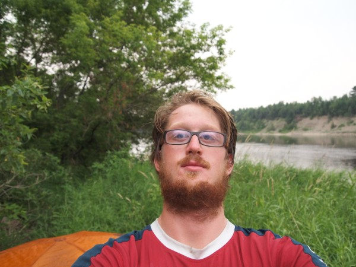
These past few days have been all about returning to what was once normal. I hadn't done several successive long days of riding or pitched my tent anywhere questionable in a while!
After leaving Bruno's I rode about 160 kilometres to Saint-Pacôme. My body wasnt thrilled about being a long-distance engine again, but eventually accepted the task my mind had given it. That night I made camp in an abandoned lot (where there had once been a bridge) behind a maintenance shed. Today I rode the remaining 170 kilometres to Edmundston, New Brunswick. Au revoir, Québec!
Tonight I'm staying with France, a fantastic new friend from couchsurfing.org. She accepted me with very short notice, and is currently cooking up an enormous feast. Tomorrow I begin the three day trek to Moncton.
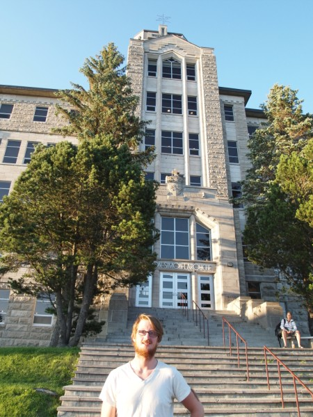
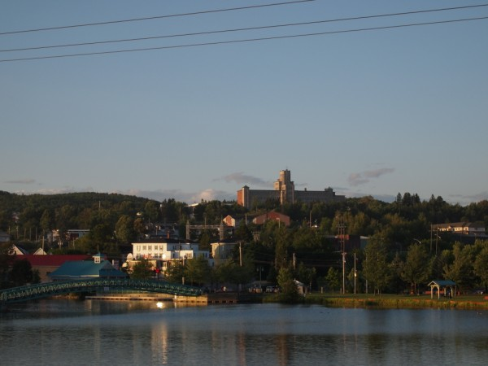
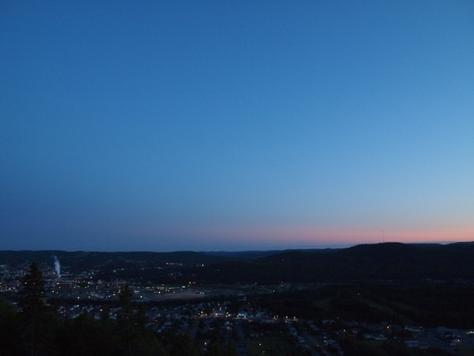
I slept later than planned this morning, and when I awoke my hosts were waiting for me with breakfast. I then rode about thirty kilometres to their daughter's place for a second breakfast before continuing on my way. There again, I was very well received and met another couple who had known my grandfather. It was fun to chat with my generous hosts for a while and they took several pictures of me before I left.
My total distance for the day was only about 100 kilometres, and the terrain was far less hilly than it's been the past few days. I was able to take my time as I made my way towards my dad's cousin Bruno's place for the night, arriving just in time for a delightful lasagna supper. I had never met Bruno and his family, but I have really enjoyed getting to know them—it feels special to experience the bond of family with people I never knew before.
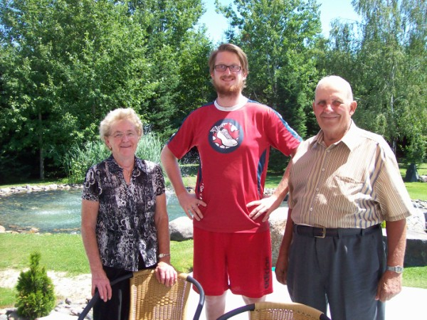
I was sad to say goodbye to my uncle and his family today, but at the same time it felt good to be back on the road. This afternoon's ride was a short 60 kilometres through hilly terrain to the little town of St-Gédéon-de-Beauce, where my dad was born. When I got there, I found the house where he spent his early years—it is now a funeral home.
After taking a few pictures I got ice cream (it's extra good around here) and went for a walk. It wasn't long before an elderly gentleman started talking to me and, upon discovering that I was the grandson of Dr. Gérard Noël, invited me into his house. He and his wife fed me and told me stories about how my grandfather had helped them—often driving through snowstorms at night to do so. I'd heard many similar stories growing up, but it felt surreal to hear it from these strangers.
I ended up pitching my tent in their back yard for the night, and even though I am presently falling asleep to the charming tune of the neighbours' souped up cars and bad techno I know that tonight I will dream of doctors in old cars on icy country roads.
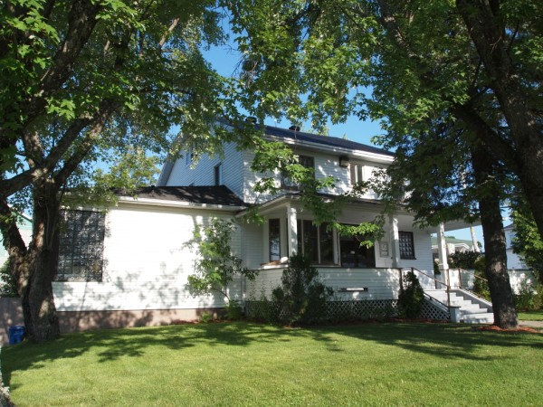
I've extended my stay at my uncle's farm by a day, and I'm very glad I did. Life here is fun—they've relaxed their work schedule in light of my visit, but there are still things to be done and I'm very happy to help when I am able. We tilled the fields, picked strawberries and tomatoes, and bagged garlic flowers together—I even borrowed a farmer's shirt and hat for the occasion. Yesterday afternoon we went to the beach, and last night we went into town to see a concert in the park (with exceptional ice cream afterwards). This place is paradise, and I feel really comfortable with my family here even though I haven't seen them in almost ten years.
Tomorrow I will leave for St-Gédéon-de-Beauce where my dad was born. I'm excited to continue my journey through this incredible part of the country.
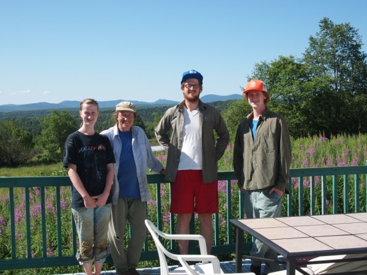
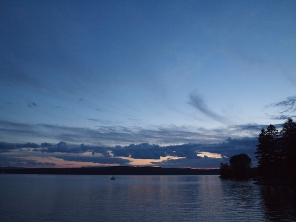
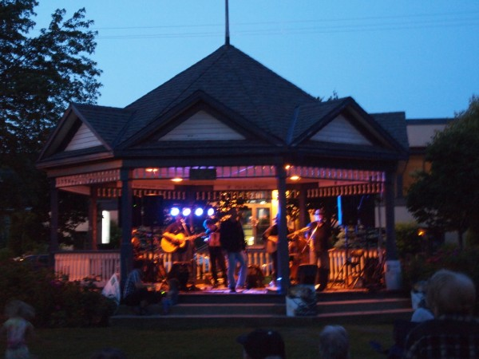
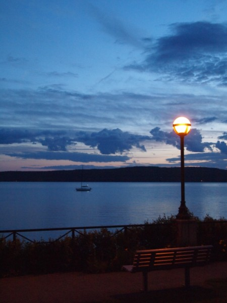
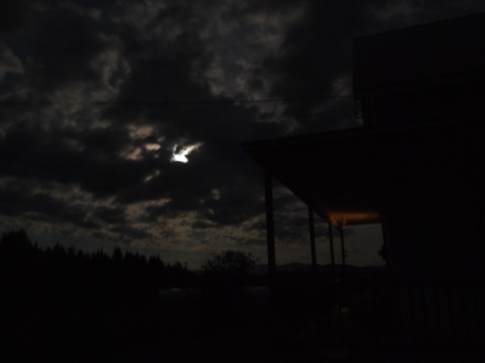
Yesterday I had fun helping my cousin Antoine build a new porch for my cousin Julie in Sherbrooke (and ate several more enormous, delicious meals). This morning, after bacon and eggs at François and Sylvie's, I left for my uncle Louis' farm near Piopolis. It was only a 100 kilometre ride, but the mountains slowed me down more than I expected. They may not be as tall as the Rockies, but I was on country roads and they got quite steep. Fortunately, that also made for some fun downslopes—I beat my previous speed record of 67 km/h, getting my bike up to 69 km/h for a few seconds.
Another advantage of country roads is country people. I met all sorts of new friends who I will probably never see again, and was even offered a place to stay for the night. I refused, since I was headed to my uncle's place, but I appreciated the sentiment nonetheless.
When I got to Louis' farm there was a big welcome sign for me on the driveway to make sure that I didn't accidentally head past their house and down a steep hill, which I found incredibly thoughtful. We drove into the town of Lac Megantic (where my dad spent a significant part of his childhood) shortly after I arrived to eat supper and watch my cousin perform with his improv team. As expected, my poutine supper was delicious and my cousin Jasmin is really good at improv.
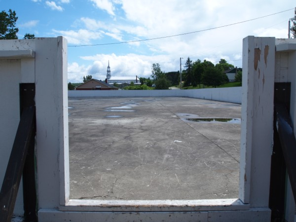
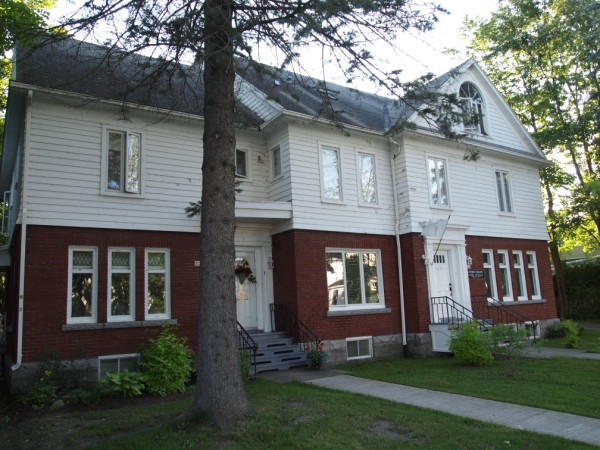
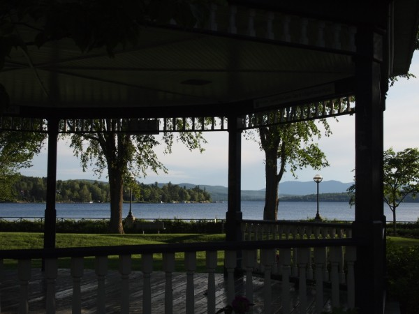
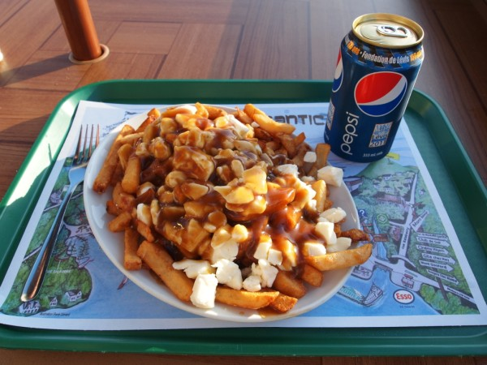
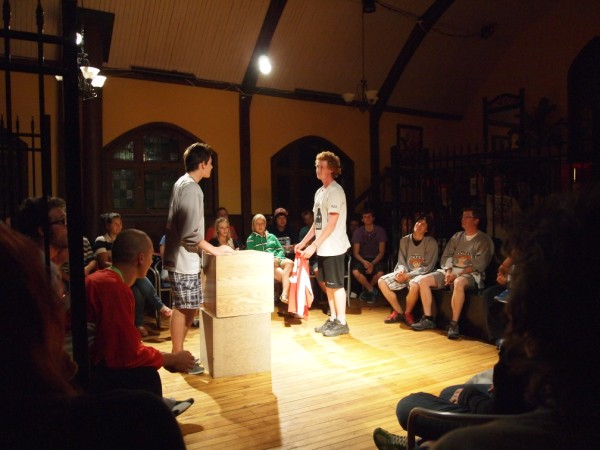
Since my arrival in Montréal my riding days have been relatively short. I made my way to my cousin Bernard's place in Chambly (about 30 kilometres south of Montréal) Friday evening—besides delicious food, a fantastic local beer and a super comfortable bed it was really fun to see family that I hadn't seen in years. I continued the family tour with an afternoon stop at my uncle André and aunt Lorette's place on Saturday. Again, it was great to see them. They took me out for genuine Montréal smoke meat—there is really nothing else like it.
That night I returned to Carly's place in the city. My new friend once again fed me wonderfully and was generally excellent company, but in the morning it was time to leave for good. I rode about 170 kilometres to Sherbrooke, where my uncle François was kind enough to pick me up when I called him from the outskirts of town—it was getting dark and I was sort of lost. I spent the day with François and his wife Sylvie and the evening with my aunt Pierrette and family. Everyone here has caught wind of the fact that I like to eat a lot, and they have been feeding me accordingly. It feels really good to reunite with relatives who last knew me as a little boy, and I plan to continue visiting with Noëls for a few more days before continuing on my way.
Through a few misadventures, yesterday's 210 kilometre day became almost 230 kilometres—a new record for me. It also ended up being 15 hours between departure and arrival—another personal record which I hope never to repeat.
After writing last morning, I explored Ottawa and pulled out my camera a bit before crossing the bridge into Québec. It was satisfying to cross provincial borders at last, after spending over a month in Ontario, and I have always had a soft spot for Québec. It's where my dad was born and where much of my family lives, and there is nowhere else quite like it. It is also home to the craziest drivers in Canada—most Québecers I know will readily concede that—so I should not have been surprised when one of them drove into me.
Mom, please keep reading. I'm not in the hospital, nothing is broken, and the scariest part of this story is still to come.
I was riding through a construction area in Gatineau, wide enough for a car and a bike or just maybe wide enough for two cars if they were small and moving slowly. Some drivers were using the lane I was in as a turning lane, and one of them decided to do that right as I pulled up. Cars started honking for me and I yelled as I tried to avoid the erratic driver, but she was completely oblivious until her passenger side hit me. Fortunately neither of us were moving very fast and so apart from being in shock I was okay. My back rack and fender were dinged up a fair bit, though, so I spent the next half hour fixing them.
When I got back on the road the construction lane narrowed even further, to the point where I couldn't ride in it beside the cars at all. I opted for the sidewalk, but the curbs were too high to ride up easily so I had to walk for several kilometres until the lanes finally opened up again. By the time I was on the road out of Gatineau it was already 11:00 AM, and I still had about 200 kilometres to go.
I had to buy a map when I found an information centre several kilometres down the highway—their free option wasn't nearly as good as some of the other provinces. Unfortunately, the one I purchased was also poorly marked and seemed out of date—a fact that caused me to make some wrong turns more than once, wasting precious daylight. When I finally reached the outskirts of Montréal the sun was starting to set. I stopped to inform my host that I would be coming a bit late, turned on my lights, and road into the city at dusk.
Montréal is a romantic city. Even the endless suburbs had a soothing quality to them, a welcome feeling after my extremely long ride. I zoomed through the darkness happily, eager for bed as the cool night air refreshed my sunburnt skin. Unfortunately, my night was far from over.
When I'd bought the road map I had also taken a free tourist map of Montréal. My route into the city showed that the highway I was on would eventually become an expressway, so I watched for the signs and planned to turn off when I got to that point. That point, however, happened to be under construction, and any signs which would normally be there were not. The change also happened right after a rail bridge, so there was no way for me to see the danger ahead. By the time I realized that I was on a high speed expressway, there was nothing to be done. There was no shoulder, and cars were zooming by too fast for me to turn my bike around.
I wish I could describe some sort of epiphany that came from realizing that I could die, but I was too preoccupied with trying to live. I rode for what felt like an eternity until I finally reached (you guessed it) a construction zone, where I could pull out of traffic. I didn't hesitate for a second to call 911—there was nothing else to be done. Within five minutes a cruiser was there to pick me up, and that is how I got a ride in the back of a police car on my bike ride across Canada.
It was easily the most frightening moment of my life—I'm shaking as I write this, actually. I had made an incredibly stupid mistake, but my night was still not finished. The officers had dropped me off far from where I needed to be, so I bought a proper map (something I should have done much earlier) and slowly, carefully, made my way to my bed for the night.
I can't adequately describe the relief that found me when I finally arrived and was greeted by my amazing host, a friend of a friend from Winnipeg. Carly is a sweet, quiet, and generous human who gently listened to me rattle on about my eventful day over a glass of wine and a plateful of perogies. Then, at long last, the day was behind me and I went to sleep.
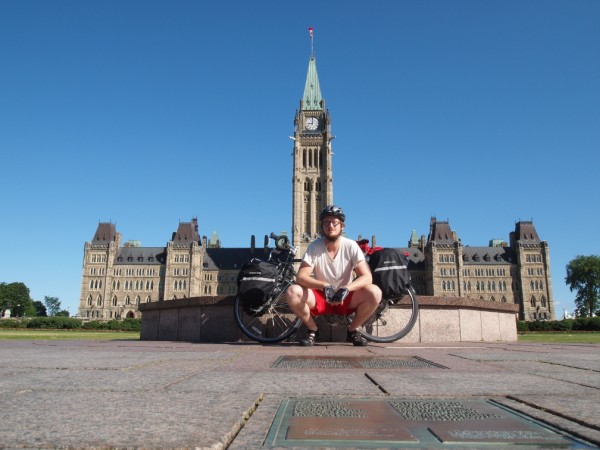
It's 7:30 AM and I'm sitting where I slept last night, on a girl named Luisa's couch. Fittingly, I met Luisa on couchsurfing.org—she lives in Ottawa.
Yesterday morning I slept late at Lindsay's place in Brockville before she made me a delicious brunch and I took off. It was only a "short" 120 kilometres from Brockville to Ottawa, and besides the heat, the humidity, and a short spell of very heavy rain it was a beautiful ride along the Rideau Canal. I arrived in Ottawa around 6:00 PM and stopped at a McDonald's to make some phone calls and use the internet before meeting up with Luisa, who has been excellent company and a great host. Today I'm going to ride about 210 kilometres to Montreal.
It was really nice to take another vacation from my vacation. My week in Waterloo, like my week in Winnipeg, was a very welcome change from being on the bike every day. It felt so good to spend time with my brother Martin and his wife Lindsay. We camped and hiked for a few days on Bruce Peninsula—one of the most beautiful and memorable parts of Canada that I've experienced so far—before retiring to their home in Waterloo for a few more days of relaxation. Of course, like my week in Winnipeg, there came a point where I was anxious to be on the road again. Martin and Lindsay drove me up to Toronto, where we spent an afternoon together before the inevitable goodbye. I was sad to part ways with them, but I needed to keep moving.
In Toronto, I spent a couple days with my old friend Matt. We had a lot of fun celebrating Canada Day together before he left on a flight to Winnipeg and I left on my bike to ride further from it. By the time I finally got going, it was already 10:00 AM on July 3. I'd hoped to ride all the way to Trenton that day but I ran out of daylight 30 kilometres early so I pitched my tent in the mosquito infested soccer fields of Colborne, Ontario. As frustrating as it was to set up camp in the dark amid clouds of mosquitoes and eat a cold supper of sardines and beans, it was awesome to see the stars and the fireflies make light.
Yesterday morning I woke up early, riding out by 6:00 AM. I needed to make up the previous day's lost distance since I had a rendezvous in Brockville (more on that right away) which was 210 kilometres away. I made it, meaning that yesterday's ride was a personal record for distance. I didn't escape unscathed, though—my back is now a mean shade of red, the worst sunburn of my trip by far. Nevertheless, I made it.
My Brockville rendezvous was with a lovely friend of my brother's named Lindsay who I met in Waterloo. Lindsay is originally from Brockville and home for the week. She insisted that I stay with her on my way through and I'm so glad I did—her family has made me feel at home with delicious food, cozy bonfires, and such a comfortable bed. I've decided to take a day off in Brockville to rest and hopefully let my sunburn heal up as I plan my route for the coming days.
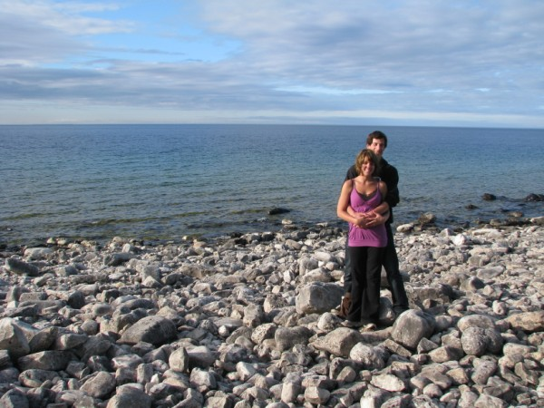
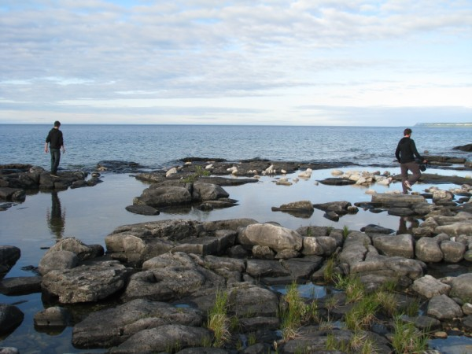
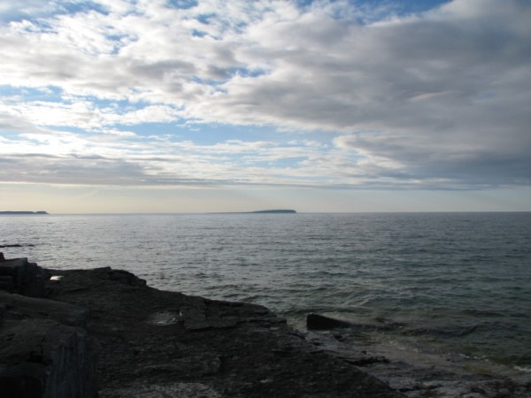
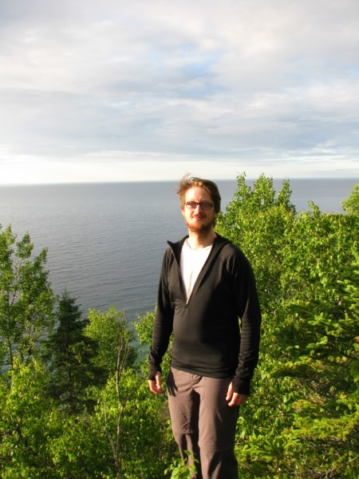
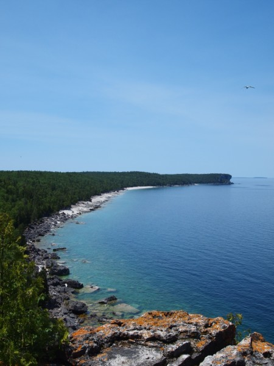